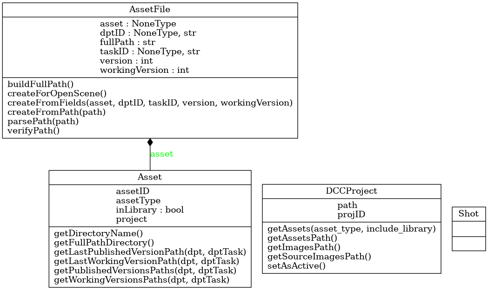

tlc.common.pipeline.Asset
{kind=link}
- class tlc.common.pipeline.Asset(project, assetType, assetID, inLibrary=False)
Bases:
objectAsset class
- __init__(project, assetType, assetID, inLibrary=False)
Constructor
- Parameters:
project (DCCProject) – Project containing the asset
assetType (str) – Asset type (key to access maps in naming module)
assetID (str) – Asset ID
inLibrary (bool, optional) – Asset is contained in library. Defaults to False.
Methods
__init__(project, assetType, assetID[, ...])Constructor
Get the asset directory.
Get the full path to the asset directory
getLastPublishedVersionPath(dpt, dptTask)Get absolute path for last published version
getLastWorkingVersionPath(dpt, dptTask)Get absolute path for last working version
getPublishedVersionsPaths(dpt, dptTask)Get absolute path for all published versions
getWorkingVersionsPaths(dpt, dptTask)Get absolute path for all working versions
Attributes
Project containing the asset
Asset type (key to access maps in naming module)
Asset ID
Asset is contained in library
- assetID
Asset ID
- assetType
Asset type (key to access maps in naming module)
- getDirectoryName()
Get the asset directory. All scenes for this asset will be organized inside this directory
- Returns:
Asset directory name
- Return type:
str
- getFullPathDirectory()
Get the full path to the asset directory
- Returns:
Full path to asset directory
- Return type:
str
- getLastPublishedVersionPath(dpt, dptTask)
Get absolute path for last published version
- Parameters:
dpt (str) – Department key
dptTask (str) – Department task key
- Returns:
Path for last published version
- Return type:
str
- getLastWorkingVersionPath(dpt, dptTask)
Get absolute path for last working version
- Parameters:
dpt (str) – Department key
dptTask (str) – Department task key
- Returns:
Path for last working version
- Return type:
str
- getPublishedVersionsPaths(dpt, dptTask)
Get absolute path for all published versions
- Parameters:
dpt (str) – Department key
dptTask (str) – Department task key
- Returns:
Paths for all published versions
- Return type:
str[]
- getWorkingVersionsPaths(dpt, dptTask)
Get absolute path for all working versions
- Parameters:
dpt (str) – Department key
dptTask (str) – Department task key
- Returns:
Paths for all working versions
- Return type:
str[]
- inLibrary
Asset is contained in library
- project
Project containing the asset